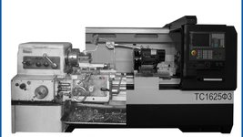
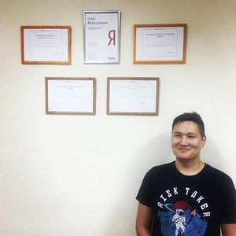

Монолитный поликарбонат Оптом!Монолитный поликарбонат — Продажа оптому производителя по отличной цене. Заходите!atrium-stroy.ru
Монолитный поликарбонат Оптом!Монолитный поликарбонат — Продажа оптому производителя по отличной цене. Заходите!atrium-stroy.ru Работа с поликарбонатом своими руками
Яндекс.ДиректПоликарбонат для Крыши– с Завода!Поликарбонат для Крышиот производителя, все цвета и размеры. Экспресс доставка!polikarbonat-rostov.ru Поликарбонат Оптом – Любой объем!Поликарбонат Оптом от производителя, всех цветов и размеров. Экспресс доставка!polygal-rostov.ru Купить токарный станок по металлуПрофессиональные токарные станки с ЧПУ. Быстрая доставка. Закажите!stankomach.com Продавец: АО СтанкоМашКомплекс. Адрес: Россия, Тверь, Академика Туполева, 124. ОГРН: 1056900216350
Содержание статьи:
1. Ключевые особенности поликарбоната
2. Особенности монтажа крыш из поликарбоната
3. Технология возведения крыши
4. Некоторые нюансы работы с поликарбонатом
В последние годы в строительстве стали применять множество новых материалов, обладающих уникальными характеристиками, благодаря которым дома приобретают оригинальный внешний вид, становятся более уютными и комфортабельными. Одним из таких материалов является поликарбонат. Отличительными характеристиками сотового поликарбоната является малый вес, высокая прочность, простота монтажа, а также способность пропускать свет.
Прозрачная кровля из поликарбоната может быть использована для покрытия крыш не только домов, веранд из поликарбоната, гаражей и беседок (прочитайте: "Крыша беседки своими руками - практичные советы"), но даже самодельных теплиц из поликарбоната. Если говорить сугубо о жилищном строительстве, то этот материал часто применяется при обустройстве крыш над холодными чердаками, мансардами, балконами и террасами. Кроме того, что часто можно видеть козырек над входом из поликарбоната в здание. Великолепно выглядит и терраса из поликарбоната своими руками, позволяющая даже в зимнее время наслаждаться окружающими пейзажами.
Ключевые особенности поликарбоната
Поликарбонат представляет собой прозрачный полимерный материал, обладающий достаточно высокой устойчивостью к механическим воздействиям, а также перепадам температуры, позволяющий создать прозрачную крышу для террасы. Благодаря наличию в его структуре мелких воздушных камер он имеет высокие тепло- и звукоизоляционные свойства. Этот материал легко режется, сверлится, изгибается и склеивается, установка поликарбоната доступна обычным людям без опыта, поэтому кровля из поликарбоната своими руками может быть создана сколь угодно сложной формы и конфигурации. Гладкая поверхность такой крыши, при условии достаточного уклона ската, не позволяет скапливаться атмосферным осадкам.
Главные характеристики поликарбоната:
Особенности монтажа крыш из поликарбоната
Дом из поликарбоната своими руками можно возвести самой различной формы. Крыша может выполняться по традиционной двухскатной технологии, может быть куполообразной, пирамидальной или призмовидной – все зависит лишь от желания и фантазии проектировщика.
Для придания крыше требуемой формы первоначально, ещё до того, как крепить поликарбонат, производится монтаж каркаса, выполняющего роль обрешетки для крепления поликарбонатных листов. Материалом для изготовления каркаса могут служить алюминиевые либо стальные профили. Кроме того, обрешетка под поликарбонат может быть выполнена из того же материала, что и само кровельное покрытие. Благодаря такому приему удается получить полностью прозрачную крышу, которая словно парит над зданием. Помимо прозрачности, к преимуществам поликарбонатных профилей, производимых в разъемном и неразъемном виде, перед металлическими следует отнести чрезвычайно малый вес, а также неподверженность коррозии. Защиту материала от негативного влияния ультрафиолетового излучения обеспечивает специальный слой, наносимый в процессе производства.
Яндекс.ДиректСоздание сайтов Ростов-на-ДонуГарантия результата 100%! сделаем сайт, который будет продавать или вернем деньги!вебпрофит.рф Выгодно купите навес в ООО «Навесофф»Огромный выбор навесовиз современных материалов. Ознакомиться с акциями:navesoff.org Монолитный поликарбонат Оптом!Монолитный поликарбонат — Продажа оптому производителя по отличной цене. Заходите!atrium-stroy.ru
Первое, с чего начинается работа с поликарбонатом своими руками, - создание проекта, в соответствии с которым будет осуществляться монтаж крыши из поликарбоната. Кроме того, необходимо должное внимание уделить выбору поликарбоната, соответствующего по своим параметрам конкретной конфигурации крыши.
По качеству материала поликарбонат бывает:
Если ведется строительство крыши для жилого помещения, то целесообразно выбрать кровельный поликарбонат повышенной толщины, обеспечивающий лучшую тепло- и шумоизоляцию.
При подготовке проекта и произведении расчетов следует учитывать тот факт, что ширина выпускаемых промышленностью поликарбонатных листов составляет 210 сантиметров, и их стыки друг с другом должны приходиться на середину стропильных балок, в противном случае неизбежна сварка поликарбоната, которая неизбежно приводит к ослаблению кровли.
Укладка стропил (в их роли могут выступать деревянные брусья сечением 60х40 миллиметров либо металлический профиль) производится с таким расчетом, чтобы между их центральными линиями было расстояние, равное 101 сантиметру, а между краями материала кровли – 104 сантиметра.
После укладки стропил монтируется каркас-обрешетка для поликарбоната. При использовании металлических алюминиевых профилей торцы листов рекомендуется заклеить строительным скотчем во избежание накопления там грязи и пыли. Продольные желобки поликарбоната надежно закрываются специальной перфорированной лентой. В случае применения неразборного поликарбонатного профиля его крепление к стропилам выполняется при помощи саморезов с термокомпенсационными шайбами с интервалом 30 сантиметров. Крепление профиля разборного типа осуществляется по частям: вначале прикручивается его нижняя часть, а после укладки кровельного материала - верхняя. После того, как каркас подготовлен, производится укладка и крепление листов поликарбоната.
Монтаж поликарбоната, подробная видео инструкция:
Некоторые нюансы работы с поликарбонатом
Яндекс.ДиректИщешь VPS с поддержкой? Заходите!Мгновенная активация! До 1 года в подарок! Премиум поддержка! Заказывайте, сейчас!well-web.net Банк для ИП «Сфера» - от 0 ₽Бесплатно: 3 месяца РКО, помощь юриста, бухгалтерия. Доставка документов на дом!sfera.ru Финансовые услуги оказывает: АО «БКС Банк»HTML и CSS. Подробный видеокурс!Пошаговое обучение для начинающих. 33 урока (6 часов 43 минуты). Присоединяйтесь!srs.myrusakov.ru 18+
Если строится павильон из поликарбоната или любая другая конструкция, для соединения листов с каркасом могут быть использованы обычные саморезы, однако перед их вкручиванием предварительно рекомендуется просверлить в поликарбонате отверстия, диаметр которых на один-два миллиметра превышают диаметр саморезов. Вкручивать саморезы до упора не следует, так как это лишит листы возможности двигаться в случае температурных перепадов. Читайте также: "Крыша для гаража своими руками".
В структуре поликарбонатных листов имеются полые каналы, на которые следует обращать внимание в процессе монтажа. Они должны быть ориентированы параллельно изгибу или скату кровли, а в случае вертикальной конструкции – вертикально. Правильный монтаж позволит избежать деформации материала в процессе эксплуатации.
Во время работы с поликарбонатом необходимо соблюдать осторожность, чтобы не допустить повреждения верхнего защитного слоя. Резать поликарбонат можно обычными инструментами, которые применяются для дерева или пластика, однако, прежде чем резать поликарбонат, они должны быть остро заточены. Прочтите также: "Беседка из поликарбоната своими руками".
�